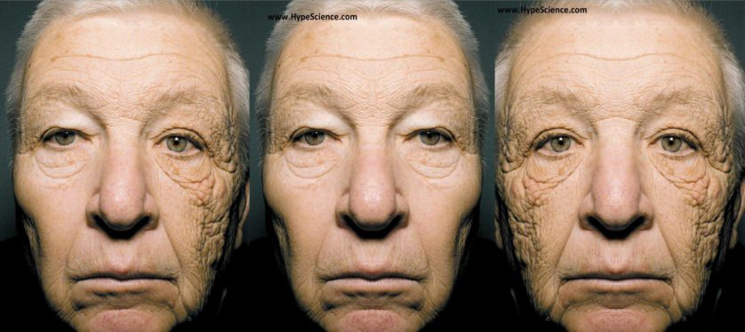

SOS
SKIN CARE
SOLUÇÕES PARA A SUA PELE
INÍCIO
DESCUBRA
SOBRE
IMPORTÂNCIA DE PROTEGER A PELE:
Nossa pele está constantemente exposta a uma variedade de fatores ambientais prejudiciais, como raios UV do sol, poluição, vento e mudanças climáticas. Sem a devida proteção, esses elementos podem causar danos significativos à pele, como queimaduras solares, envelhecimento precoce, manchas escuras, ressecamento e até mesmo aumentar o risco de câncer de pele.
Além do protetor solar, outras medidas de proteção da pele incluem usar roupas que cubram a maior parte do corpo, usar chapéus e óculos de sol, evitar a exposição ao sol nos horários de pico e manter a pele bem hidratada para fortalecer sua barreira natural de proteção.
Exemplo:
Saúde e Ciência - Extra Online

A aplicação de protetor solar diariamente é uma das formas mais eficazes de proteger a pele dos danos causados pelos raios UV. Ao proteger nossa pele dos danos causados pelo ambiente, não apenas preservamos sua saúde, mas também mantemos sua aparência jovem, radiante e saudável por mais tempo. Portanto, fazer da proteção da pele uma prioridade em nossa rotina diária de cuidados é fundamental.
Instruções básicas sobre como proteger a pele corretamente:
Use protetor solar diariamente: A exposição aos raios UV do sol pode causar danos à pele, incluindo queimaduras, envelhecimento precoce e até mesmo câncer de pele. Aplique protetor solar com FPS (fator de proteção solar) de no mínimo 30 todos os dias, mesmo em dias nublados. Reaplique a cada duas horas, especialmente se estiver suando ou nadando.
Cubra-se: Quando estiver ao ar livre, use roupas leves e de tecido apertado para cobrir a pele exposta. Chapéus de abas largas e óculos de sol também ajudam a proteger o rosto e os olhos.
Evite o sol nos horários de pico: Os raios UV são mais fortes entre as 10h e as 16h. Se possível, evite a exposição direta ao sol durante essas horas. Procure sombra sempre que puder.
Hidrate a pele: Mantenha a pele hidratada bebendo bastante água e usando cremes hidratantes. A pele bem hidratada é mais resistente a danos causados pelo sol e outros elementos ambientais.
Limite o tempo no chuveiro e use água morna: Banhos longos e quentes podem remover os óleos naturais da pele, levando a ressecamento e irritação. Tome banhos curtos e use água morna em vez de quente.
Use produtos suaves de limpeza: Evite sabonetes e produtos de limpeza que contenham ingredientes agressivos, como sulfatos e fragrâncias. Opte por produtos suaves e sem perfume, especialmente se tiver pele sensível.
Tenha uma dieta saudável: Uma dieta rica em frutas, legumes, grãos integrais e proteínas magras pode ajudar a manter a saúde da pele. Alimentos ricos em antioxidantes, como vitamina C e vitamina E, podem ajudar a proteger a pele contra danos causados pelos radicais livres.
Não se esqueça dos lábios e das mãos: Aplique protetor labial com FPS e use luvas sempre que estiver exposto ao frio ou ao vento. Essas áreas tendem a ressecar mais facilmente e precisam de proteção adicional.
RETORNAR